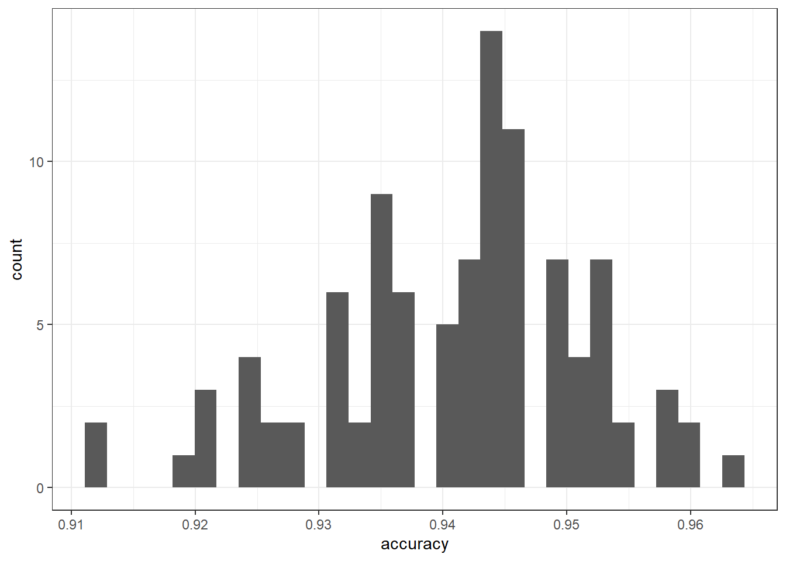
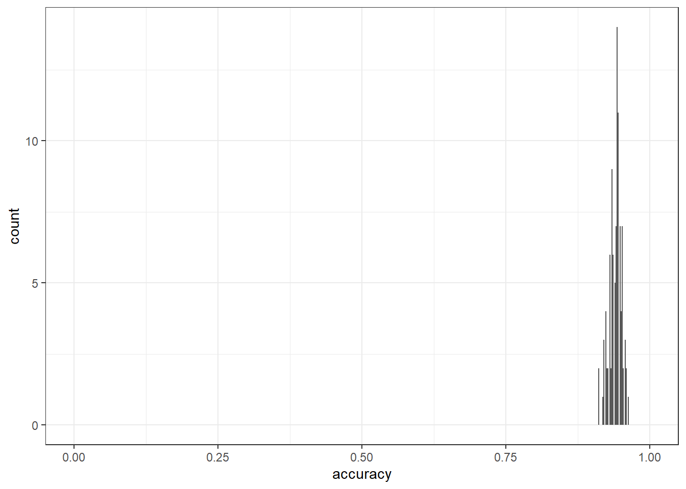

Classifying American Speeches
Gerold Schneider and Max Lauber
2022-11-15
1 Introduction
This tutorial shows how to perform document classification using R. The entire R markdown document for the tutorial can be downloaded here.
The tutorial requires you to install and load several packages to analyze linguistic data. To help you, we directly include the commands to do so in the script and walk you through it step by step. Let’s get on it!
2 Motivation
Document classification is a useful method of computational linguistics since it provides an effective way of handling large quantities of text. Think for a moment about spam mails. According to an analysis – or self-promotion, if you will – by the anti-virus company Kaspersky, more than half of the global email traffic is spam mail (Vergelis et al. 2019) (see here) . How do email providers manage to sift these quantities of data? They use document classification to separate the important email traffic from spam mail.
Emails are obviously a rather specific category of text, with one distinguishing feature: either you want them in your inbox, or you don’t. Of course, one person’s spam may be the other person’s key to retrieving a lost fortune, but for all intents and purposes, the global mail traffic is binary:
you don’t want it = spam
you want it = mails
For binary classes of text such as this, document classification comes in really handy. We will point to sources that address how document classification can be used in contexts with more than two categories, but in this tutorial we eschew such complexity.. To further preserve our collective wellbeing, we now turn our backs on spam mail.
3 American Speeches
Instead, we dive into another category of text that is notoriously binary: American presidential speeches. Although all candidates claim to peddle policies, what they are giving us instead are words (at least during the campaign trails). And by throwing these words into the meat grinder of document classification, we can identify which linguistic features are typical of which party, and, in a slightly more extensive analysis, we could tell the party hard-liners from the mavericks - but for now, we’ll stick with the binary categories and with linguistic features.
To use the jargon of computational linguistics: we are using supervised document classification for political profiling. Political profiling should not require further explanation, but the document classification we are getting to in a minute is considered supervised because the corpus has been constructed to include only two categories on the basis of pre-existing knowledge.
We extend our thanks to Marco Guerini and his co-authors for the construction of the CORPS II corpus, which contains 8 million words from 3618 speeches by American presidential candidates (Guerini et al. 2010). This CORPS II serves as our input. On the other end, our output will contain both a model that can predict a speaker’s party affiliation with a pleasingly high degree of accuracy and a list of keywords containing the linguistic features most typical for Republican candidates - and by extension, also those words least typical for Republicans, which in this beautifully binary political system means the words most typical of Democratic candidates.
3.1 Preparation and Session Setup
As mentioned at the outset, this is an introduction to document classification based on R. A rudimentary familiarity with R and RStudio are helpful for getting the most out of this. If you have yet to install R or are new to it, we can recommend this tutorial to R, which walks you through the installation and shows a range of its functionalities. In the following, we assume that you have downloaded and installed both R and RStudio and take it from there.
Although R in its basic version already contains a lot of
functionalities, we do need to install some packages for the code below
to run without exploding into a bouquet of error messages. If you
already have the packages quanteda,
quanteda.textmodels, stopwords and
ggplot2 installed, just skip to the next heading. If you
don’t have them yet, the first thing you want to do is run these first
lines of code:
install.packages("quanteda")
install.packages("quanteda.textmodels")
install.packages("stopwords")
install.packages("ggplot2")This may take a minute or three. In most cases, this will work without any hiccups. If you should get an error message, we recommend taking a moment to read what it says, and, if it does not make any sense to you, to google it. If an issue comes up for you, chances are that this has already happened to someone else - and, fortunately, the R community has a pretty good track record of responding to questions about technical issues. Generally, it is also a good idea to use a relatively new version of R. If you have last used R two years ago, do update it.
Once you have installed the packages, you’ll need to load them in the current session. This is done with the following lines of code:
library(quanteda)
library(quanteda.textmodels)
library(stopwords)
library(ggplot2)With the packages loaded, the stage is set. Now we need to dress up the actors.
3.2 From Data to Useable Objects
Before we can do anything further, we need to load the data into R.
As mentioned earlier, we are working with the CORPS II corpus compiled
by Guerini et al. (2010). There are many ways to get
the corpus into R, but we are going to download the data from the data
directory of the LADAL GitHub repository. By executing the following
line of code, you tell R to download the file containing the corpus from
github and storing it in the session under the variable name
rt:
rt <- base::readRDS(url("https://slcladal.github.io/data/SEL_perparty_v2.rda", "rb"))In the meantime, we want to draw your attention to the second parameter of the readtext command, namely the specification defining the text field. These specifications are called flags. These are often useful and sometimes necessary. In this case, the flag does exactly what it says: it tells R in which column the text is stored.
Let’s take a look at rt, the variable in which we stored
the corpus. We can do this simply by str which returns the
structure of the object:
str(rt)## Classes 'readtext' and 'data.frame': 3247 obs. of 5 variables:
## $ doc_id: chr "SEL_perparty_v2.csv.1" "SEL_perparty_v2.csv.2" "SEL_perparty_v2.csv.3" "SEL_perparty_v2.csv.4" ...
## $ text : chr "We who are Christians usually think about Christ in terms of obligations of charity , and faith in God , and so"| __truncated__ "It is a very great honor and pleasure for me to be here and participate in a dinner this evening that aims at s"| __truncated__ "Thank you . Praise God . Thank you very much . Tonight , I would like you first of all to join me in rememberin"| __truncated__ "Thank you . Thank you . Praise God . Thank you very much . I want to tell you I 'm very happy to have a few mom"| __truncated__ ...
## $ party : chr "rep" "rep" "rep" "rep" ...
## $ fileid: chr "akeyes-95" "akeyes-98" "akeyes1-2-00" "akeyes1-6-96" ...
## $ name : chr "Alan_Keyes" "Alan_Keyes" "Alan_Keyes" "Alan_Keyes" ...The output tells us what we are dealing with: a object consisting of 3247 documents and 3 document variables. We also see the first six rows of the object, which shows that we are dealing with a two dimensional matrix or a table, which in the R context is also called a data frame. What may be surprising is that, although the object is described as having three document variables, the data frame has five columns.
If we look at the structure of the corpus, we can see that the file
contains four columns, labeled party, fileid,
name and text, respectively. The object
rt to which we assigned the data created an additional
column, labeled doc_id. In this variable, the row number of
each row in the file is stored. If we were to load in a second document
and append it to the rt object, it would be clear which row
of data comes from which corpus. So, while it’s great to have this
doc_id, the output also makes it clear that it is not
meaningful information relevant to the text we are interested in.
The text source files come from the textual component of the files, and the document-level metadata (“docvars”) come from either the file contents or filenames.
So the three document variables are the document-level metadata, which pertain to the texts we are interested in. Depending on the type of analysis or operation you are interested in performing on the data, this is not essential information. For document classification, however, as well as many other analyses, this metadata is essential.
4 From Text to Corpus
Before we can proceed to the document classification, we need to
process the data some more. As a first step, we turn the data frame
rt into a corpus object. We can do this with one intuitive
command:
fulltext = corpus(rt)Thereby, we create a new corpus object called fulltext.
Let’s take a look at it:
fulltext## Corpus consisting of 3,247 documents and 3 docvars.
## SEL_perparty_v2.csv.1 :
## "We who are Christians usually think about Christ in terms of..."
##
## SEL_perparty_v2.csv.2 :
## "It is a very great honor and pleasure for me to be here and ..."
##
## SEL_perparty_v2.csv.3 :
## "Thank you . Praise God . Thank you very much . Tonight , I w..."
##
## SEL_perparty_v2.csv.4 :
## "Thank you . Thank you . Praise God . Thank you very much . I..."
##
## SEL_perparty_v2.csv.5 :
## "Thank you very much , God bless you . Unaccustomed as I am t..."
##
## SEL_perparty_v2.csv.6 :
## "Thank you very much . You all make me feel so good with that..."
##
## [ reached max_ndoc ... 3,241 more documents ]The output here contains the first six entries of the corpus, which are now only the text fields, the actual speeches. The metadata is not lost, however, as the first line of the output shows - telling us that the corpus consost of 3,247 documents and 3 document variables. This is precisely as it should be.
If you’re somewhat familiar with R, you may have noticed something slightly off-putting. Usually, when you enter a variable name, the output shows the whole variable. In this case, we only got the first six entries. This is one of the benefits of the corpus object: since corpora are often voluminous and take a surprising amount of computational power to be displayed in the console, there is a safety mechanism built into the corpus object. To prevent an accidental system overload, only the head of the object is displayed.
With this, we have entered the domain of object-oriented programming.
We are not going to discuss this at length, but want to briefly
introduce the term and the idea behind it. Object-oriented programming
is based on the concept of objects, which have considerable
internal complexity, and can contain both data and code. As far as the
data goes, this is not surprising: we have something like a data frame
or a vector that contains variables. This exists in most programming
paradigms. What is different in object-oriented programming is the code,
which is often called method or behavior. The behavior we encountered
just now is that of only displaying the first six entries of the object,
and only showing the text fields, which contain the data of interest in
corpus objects. This is also where we turn our attention next.
5 Pre-Processing
Let’s look again at the output that we got looking at the corpus
object fulltext. We see several features there which pose a
hindrance to solid document classification. For instance, there is
punctuation which will have to go. Similarly, the capital letters, both
in the beginning of sentences and in words like Christians will
have to be - for lack of a better word - exorcized. The point of
removing these and other features is to reduce the variation in the
language to such a degree that we can process the texts well
statistically, while leaving as much of the semantic content as possible
intact. With this in mind, there are several steps which are necessary
in terms of pre-processing, and we will take these one at a time.
5.1 Tokenization
The first step here is to transform the text in the corpus object
into individual tokens. Right now, each text cell in the
fulltext object contains one whole presidential campaign
speech. By tokenizing the corpus, each text entry in fulltext is
transformed into a list of words. In order to do this, we define a new
variable, toks, and use the perfectly descriptive command
tokens() to tokenize the corpus and assign it to the new
variable toks:
toks <- quanteda::tokens(fulltext, remove_punct = TRUE)Sneakily, we also use a flag here to remove punctuation. Let’s look
at how this step changed the content of the corpus. Having removed the
punctuation, it makes sense to pick a speech which contained punctuation
in the beginning, so we choose speech four. We can look at this specific
speech by entering the name of the object, toks, and adding
the row number of choice in square brackets, thus:
toks[4]## Tokens consisting of 1 document and 3 docvars.
## SEL_perparty_v2.csv.4 :
## [1] "Thank" "you" "Thank" "you" "Praise" "God" "Thank" "you"
## [9] "very" "much" "I" "want"
## [ ... and 2,530 more ]5.2 Lowercasing
This next step is fairly obvious: the heading says it, the command
says it, and it’s precisely what we are going to do. We’re going to
replace all capital letters by their lowercase equivalent in the corpus.
This is mainly to reduce the variation that arises from words that stand
at the beginning of a sentence. To do it, we use the command
tokens_tolower(), as demonstrated here:
toks = tokens_tolower(toks)The command is self explanatory, but we should add: we define the
object toks as input, replace capital letters with
lowercase ones and assign the outcome again to the object
toks, thus overwriting what was there before. If we now
look at row four again, we see the result of this transformation:
toks[4]## Tokens consisting of 1 document and 3 docvars.
## SEL_perparty_v2.csv.4 :
## [1] "thank" "you" "thank" "you" "praise" "god" "thank" "you"
## [9] "very" "much" "i" "want"
## [ ... and 2,530 more ]Where before there was Thank and I, we now have thank and i. Not much more to see here, so let’s keep moving.
5.3 Stemming
This time round, the transformation is a bit more drastic: we are going to reduce each word in the corpus to its word stem. Take a quick look at the first item of the toks object:
toks[1]## Tokens consisting of 1 document and 3 docvars.
## SEL_perparty_v2.csv.1 :
## [1] "we" "who" "are" "christians" "usually"
## [6] "think" "about" "christ" "in" "terms"
## [11] "of" "obligations"
## [ ... and 6,212 more ]We have here, among other words, christians, usually and obligations. Keep those in mind as you reduce the corpus to wordstems, again using a fairly intuitive command:
toks = tokens_wordstem(toks)Using the same procedure as with lowercasing, we overwrite the
contents of the toks object with its latest transformation.
We can see how this plays out by again looking at the first item.
toks[1]## Tokens consisting of 1 document and 3 docvars.
## SEL_perparty_v2.csv.1 :
## [1] "we" "who" "are" "christian" "usual" "think"
## [7] "about" "christ" "in" "term" "of" "oblig"
## [ ... and 6,212 more ]Everything is shortened compared to before: christian, usually, and oblig. Compared to the preceding steps, a bit more informational value is lost, but this is often a trade-off worth taking, seeing as it typically enhances the performance of the document classification quite substantially.
5.4 Remove Stopwords
The final intrusion into the linguistic source material is the removal of stopwords. These are words which are very common, to a degree that one can assume that they will, on average, be equally distributed between the two classes. They are typically also words that have no meaning on their own, for example the, in, etc. As they rather regulate the relations between words, they are also called function words (as opposed to content words, which we want to keep). There is no universal list of stopwords - and some methods make do without removing stopwords - but for our purposes, it makes sense to just work with a list that is readily available, which is the one specified in the flag. The command is as follows:
toks = tokens_remove(toks, pattern = stopwords::stopwords(language = "en", source = "snowball"))Again, the command is very explicit in its function, the input is the tokenized, punctuation-less, lowercased and stemmed version of the toks object, which we overwrite to create a version that is all of the above and additionally does not contain stopwords. We see in row one how that looks:
toks[1]## Tokens consisting of 1 document and 3 docvars.
## SEL_perparty_v2.csv.1 :
## [1] "christian" "usual" "think" "christ" "term" "oblig"
## [7] "chariti" "faith" "god" "forth" "don" "t"
## [ ... and 2,751 more ]This looks quite a bit different: a lot of words are gone, such as we, who and are. For the most part, what remains are the stems of nouns and verbs, words which carry semantic meaning.
5.5 Imperfections
Clearly, this approach to pre-processing is not without flaws. We still see, for instance, in the last two positions of the output, that don’t was split into two tokens, don and t. Don would probably also appear as the appropriate word for various garments a lot in a Victorian fashion weekly, which is probably not what Alan Keyes was referring to in his presidential campaign speech, while not should probably be part of the stopword list. Or, to return to the purged stopwards mentioned above, who could have been accidentally removed: once the World Health Organization’s abbreviation is lowercased, it is indistinguishable from the pronoun. So you can see that there are some pitfalls to pre-processing, which are usually quite harmless compared to the benefits (and improved model). However, it can lead to problematic omissions in certain contexts. Ultimately, you need to be aware of the linguistic context you’re working in and make the trade-off on whether finer-grained pre-processing is worth the effort.
6 Signal and Noise
6.1 Document-Feature Matrix
With the linguistic pre-processing done, we continue to the next
step: creating a document-feature matrix – simply a table which says how
often which word occurs in each document. This is the format we need to
run the document classification. We’ll get into its structure in a
second. But first, we turn the pre-processed corpus into a
document-feature matrix. Once more, the command, dfm, is
fairly self-explanatory:
dtm <- dfm(toks)This time round, we create a new object with the name
dtm, and the input to this operation is the latest version
of the toks object. In case you are not familiar with this
particular type of matrix, you might get a better sense for what we are
dealing with is by looking at the object directly:
dtm## Document-feature matrix of: 3,247 documents, 31,939 features (98.41% sparse) and 3 docvars.
## features
## docs christian usual think christ term oblig chariti faith
## SEL_perparty_v2.csv.1 17 3 28 12 4 1 1 22
## SEL_perparty_v2.csv.2 1 1 14 3 0 1 0 4
## SEL_perparty_v2.csv.3 0 0 12 0 0 0 0 7
## SEL_perparty_v2.csv.4 1 0 15 0 0 0 0 0
## SEL_perparty_v2.csv.5 6 1 16 11 1 0 0 3
## SEL_perparty_v2.csv.6 3 0 26 10 4 3 0 7
## features
## docs god forth
## SEL_perparty_v2.csv.1 82 1
## SEL_perparty_v2.csv.2 21 2
## SEL_perparty_v2.csv.3 8 0
## SEL_perparty_v2.csv.4 4 1
## SEL_perparty_v2.csv.5 48 5
## SEL_perparty_v2.csv.6 6 5
## [ reached max_ndoc ... 3,241 more documents, reached max_nfeat ... 31,929 more features ]At first glance, you can see that our variable dtm is an
object similar to the earlier fulltext, in that only the
first six rows of the matrix are pasted in the output, and that there is
a summary of the object. And now we can also see the structure of this
document-feature matrix. Turns out, the name is quite the give-away: the
document feature matrix allows us to see how often each feature appears
in each document.
In this matrix, we can access both the columns and the rows, the way we usually do with data frames in R. To do this, we append a square bracket to the object. We can access rows thusly:
dtm[3,]## Document-feature matrix of: 1 document, 31,939 features (98.61% sparse) and 3 docvars.
## features
## docs christian usual think christ term oblig chariti faith
## SEL_perparty_v2.csv.3 0 0 12 0 0 0 0 7
## features
## docs god forth
## SEL_perparty_v2.csv.3 8 0
## [ reached max_nfeat ... 31,929 more features ]Here, we see that think features twelve times in the third speech in the corpus. Or, accounting for what the pre-processing did to the text, we can say that some version of think appears in this speech.
Accessing the columns works analogously: we simply place the number after the comma:
dtm[,3]## Document-feature matrix of: 3,247 documents, 1 feature (19.00% sparse) and 3 docvars.
## features
## docs think
## SEL_perparty_v2.csv.1 28
## SEL_perparty_v2.csv.2 14
## SEL_perparty_v2.csv.3 12
## SEL_perparty_v2.csv.4 15
## SEL_perparty_v2.csv.5 16
## SEL_perparty_v2.csv.6 26
## [ reached max_ndoc ... 3,241 more documents ]We see here that think is a frequent feature, at least in the first six speeches in the corpus. By looking at the metadata, or, as we call them here, the document variables, we can see that the first six speeches were all given by the same speaker. To access the document variables and solve the riveting riddle of who this famous thinker is, we can use another one of these intuitively named commands:
head(docvars(dtm))## party fileid name
## 1 rep akeyes-95 Alan_Keyes
## 2 rep akeyes-98 Alan_Keyes
## 3 rep akeyes1-2-00 Alan_Keyes
## 4 rep akeyes1-6-96 Alan_Keyes
## 5 rep akeyes1-6-98 Alan_Keyes
## 6 rep akeyes10-96 Alan_KeyesWith the docvars command, we get a list of the document
variables for each document, that is each row, in the dtm
object. However, we nest this inside of the command head()
- which is useful for taking a first look at any variable, since it only
displays the first six rows of a variable. We do this here because the
docvars are not subject to the same behavior protocol that the corpus
object is. Your computer is unlikely to overload if you were to
accidentally view the whole docvars without taking this
head precaution. So let’s try it:
docvars(dtm)[1:10, 1:3]## party fileid name
## 1 rep akeyes-95 Alan_Keyes
## 2 rep akeyes-98 Alan_Keyes
## 3 rep akeyes1-2-00 Alan_Keyes
## 4 rep akeyes1-6-96 Alan_Keyes
## 5 rep akeyes1-6-98 Alan_Keyes
## 6 rep akeyes10-96 Alan_Keyes
## 7 rep akeyes11-5-00 Alan_Keyes
## 8 rep akeyes11-9-95 Alan_Keyes
## 9 rep akeyes12-10-96 Alan_Keyes
## 10 rep akeyes12-5-00 Alan_KeyesEven though it becomes clear enough which document variable stands in which column, it requires a lot of scrolling to get to the top where the precise name of each document variable is pasted at the top of each column. The very top of the list is also where we find the answer to the mystery of who uses think so gratuitously. If the name Alan Keyes does not ring a bell, you are in the fortunate position to only learn today of a person whose claims to fame include having run for president three times, being appointed ambassador to the UN’s Economic and Social Council by Ronald Reagan and filing a lawsuit against Barack Obama - requesting documentation proving that Barack Obama is a natural born citizen of the US. The things you learn in computational linguistics never cease to amaze, eh?
6.2 Document Frequency of the Features
The next step in our journey toward document classification requires
us to count how often each feature appears in the corpus, for reasons
which will become apparent shortly. Our trusty friend, the Quanteda
package, anticipates this need and furnishes us with the appropriate
command, named docfreq. We use it to create a new variable,
doc_freq:
doc_freq = docfreq(dtm)The docfreq command takes our pre-processed corpus as an
argument, in the form of the dtm variable. The new
variable, doc_freq is now a long list of all the features
and their frequencies. We can confirm this by looking at the first
twenty entries, i.e. words:
head(doc_freq, n=20)## christian usual think christ term oblig
## 143 278 2630 30 954 559
## chariti faith god forth don t
## 158 827 1739 294 2341 2831
## alway jesus great wisdom citizenship understood
## 1825 32 2812 285 137 277
## said fact
## 2572 1558The output shows us each feature and the number of occurrences. It also shows us here that the features are not ranked by frequency yet, but by order of appearance in the corpus. The first few features are the ones we encounter in the first speech in the corpus.
To see which features occur most and least frequently in the corpus,
we can sort the variable doc_freq. To do this, we use the
intuitively named sort() function. In order to save
ourselves the trouble of scrolling, we nest the sort()
function inside the head function, which then looks thusly:
head(sort(doc_freq, decreasing=T), n=15)## s thank peopl can us one want year
## 3165 3121 3091 3076 3041 3040 3030 3009
## countri time make know work now american
## 3009 2978 2977 2975 2955 2925 2908The outermost layer of the line is the head() command.
Inside of this, we nest the sort() function, which takes as
an argument the variable of interest, doc_freq and the
logical argument decreasing = TRUE. After closing the
brackets on the sort function, we add the specification that we want to
see the first fifteen entries of the head.
In the output, we see many features that we would expect to appear in presidential campaign speeches. The contracted ’s is the most common feature, which makes sense considering that it can be used both in the sense of let’s build a better future together or as a possessive. Contraction are also generally used frequently in spoken language. We are clearly reminded that we are dealing with a corpus of political speeches, in because many words are associated with shaping something: can, want, make, work indicating the activities and countri pointing to the object to be shaped. There are also flavors of urgency coming through, with year, time and now referring to the temporality of the campaign. Finally, we are reminded that we are dealing with American politicians. So, we have a pretty good interpretive turn-out already here.1
For some insightful contrast, let’s look at the last fifteen features
in this ranking. To do this, we use almost exactly the same command as
before, but instead of nesting everything under head(), we
do it under the tail() function, like so:
tail(sort(doc_freq, decreasing=T), n=15)## umphf brasim t-worry-be-happi 5-percent
## 1 1 1 1
## africa-caribbean koz 4x400 meteorit
## 1 1 1 1
## micro-organ somebody- nowak pantoja
## 1 1 1 1
## aspira rosello hillcrest
## 1 1 1It would be possible to go and look at the contexts of these features, but in the interest of your sanity and ours, we graciously skip this step.
Instead, we return the earlier promise and explain why we created the
doc_freq variable. As we can still see in the output, the
features in the tail are on the one hand extremely rare, and on the
other hand not very useful. The latter reason would not be a criteria
for exclusion, but the fact that they are extremely rare could muddle up
the document classification model we are interested in, the model could
learn corpus coincidences, which are often referred to as
noise, thus blurring the signal of frequent words. So,
we remove all features from the corpus which occur less frequently than
five times. We do this using the following command:
dtm = dtm[,doc_freq >= 5]As you can see, we are once again overwriting the dtm
variable with a specific iteration of the variable. This time, we choose
to retain all the features which occur more than five times in the
corpus, with the result that the features which occur less frequently
drop out. Let’s see how well this worked, using the same set of commands
as above. First, we overwrite the doc_freq variable with
the document frequencies of the latest version, then we check out the
tail:
doc_freq = docfreq(dtm)
tail(sort(doc_freq, decreasing=T), n=15)## salina soto job-train oldfashion kennelli underwood
## 5 5 5 5 5 5
## telecom huey gutenberg hilari kaleidoscop multi-raci
## 5 5 5 5 5 5
## sweepstak bifida 1910
## 5 5 5We now find a new set of random seeming words at the tail of the
doc_freq variable, but at least they all occur at least
five times, which means they won’t distort the model too badly. And just
to make sure we didn’t accidentally mess up the frequent features, we
can again take a look at the head:
head(sort(doc_freq, decreasing=T), n=15)## s thank peopl can us one want year
## 3165 3121 3091 3076 3041 3040 3030 3009
## countri time make know work now american
## 3009 2978 2977 2975 2955 2925 2908Only to find, lo and behold, that they are identical to what we had above. Awesome! But it makes sense to check if our data develops in the expected way. Such checks, also called sanity checking, detect early on if one is on the right track – instead of getting error messages in one’s last processing step. On to a final step of preparation.
6.3 TFIDF
Before we continue to the actual document classification (never fear:
we are actually going to get there), we need to weight the features in
the corpus object dtm by their tfidf. This beauty of an
abbreviation stands for
term frequency-inverse document frequency, and does exactly
what it says: the number of occurrences of the word in the current
document is divided by the number of documents in which the feature
occurs. By this division, we account for the fact that some words are
generally very frequent, and thus would receive an overproporational
amount of significance despite being rather pedestrian and carrying
little specific semantic content if we relied on frequency alone. An
example we’ve already discussed above is the contracted ’s,
which is the most frequent feature in the corpus, on account of just
being a very common word in the English language.
Before we apply the tfidf weights, let’s load the first document in
the dtm object:
dtm[1,]## Document-feature matrix of: 1 document, 11,780 features (94.03% sparse) and 3 docvars.
## features
## docs christian usual think christ term oblig chariti faith
## SEL_perparty_v2.csv.1 17 3 28 12 4 1 1 22
## features
## docs god forth
## SEL_perparty_v2.csv.1 82 1
## [ reached max_nfeat ... 11,770 more features ]This will save us a lot of scrolling time when we compare the pre- and post-tfidf weights.
Once again, quanteda actually furnishes us with a command to easily
transform our dtm variable to adapt to the tfidf weights.
The command is self-explanatorily labeled dfm_tfidf(), and
we use it to overwrite the current version of the dtm
variable:
dtm = dfm_tfidf(dtm, force=TRUE)You can see that the command takes as its argument first the object
to be transformed. The second argument, the flag force=TRUE is usually
not needed. As a protection to makes sure that one does not tfidf-weight
twice, the dfm_tfidf function refuses to accept matrices that are
already weighted. Let’s take a look at the first entry of the
dtm object now, we can see that the weights of the features
have changed substantially:
dtm[1,]## Document-feature matrix of: 1 document, 11,780 features (94.03% sparse) and 3 docvars.
## features
## docs christian usual think christ term oblig
## SEL_perparty_v2.csv.1 23.05449 3.202312 2.562743 24.41233 2.127736 0.7640705
## features
## docs chariti faith god forth
## SEL_perparty_v2.csv.1 1.312825 13.06749 22.23698 1.043135
## [ reached max_nfeat ... 11,770 more features ]Where before we had a simple count of occurrences, we now have the tfidf scores. Some of the salient changes can be seen in the features christian and think. In terms of raw counts, Alan Keyes’ speech contains christian 17 times. With the tfidf weights, christian actually becomes more important, with a weight of 23.06. This indicates that christian is used comparatively rarely in other speeches, making Keyes’ usage here more impactful. By contrast, although think occurs 28 times in Keyes’ speech, it only receives a tfidf score of 2.56, indicating that it also features heavily in many other speeches in the corpus. Turns out, Keyes is not a lone thinker among these politicians. What a shocker.
Let’s stick with the feature think for a second, and look at
its tfidf score in the first few speeches. Remember that, since
dtm is an object containing data and a behavior, we can
simply enter the third column of dtm and receive six
manageable lines of output:
dtm[,3]## Document-feature matrix of: 3,247 documents, 1 feature (19.00% sparse) and 3 docvars.
## features
## docs think
## SEL_perparty_v2.csv.1 2.562743
## SEL_perparty_v2.csv.2 1.281372
## SEL_perparty_v2.csv.3 1.098318
## SEL_perparty_v2.csv.4 1.372898
## SEL_perparty_v2.csv.5 1.464425
## SEL_perparty_v2.csv.6 2.379690
## [ reached max_ndoc ... 3,241 more documents ]We see that think generally has a relatively low score, but the scores differ from speech to speech. The reason for this is that each speech contains a different number of think features, but quite a high number of speeches contain a relatively high number. Thus, the count in each of these first six speeches is divided by the total number of speeches containing think, yielding a different but consistently rather low tfidf weight in each row.
As an aside, tfidf can be used directly to see which words are most characteristic of a document, i.e. its keywords. We could see the keywords of a document, for example document 1, by considering the words with the highest tfidf values. The simplest way to do so is to sort the tfidf values in decreasing order, from most to least frequent, and the inspect the top of the list.
sdtm_tfidf = dfm_sort(dtm[1,], decreasing=T, margin="features")
head(sdtm_tfidf)## Document-feature matrix of: 1 document, 11,780 features (94.03% sparse) and 3 docvars.
## features
## docs caesar christ christian god roman fetus
## SEL_perparty_v2.csv.1 35.48031 24.41233 23.05449 22.23698 18.86858 18.66469
## features
## docs citizenship coin imag faith
## SEL_perparty_v2.csv.1 17.8719 15.84003 15.52798 13.06749
## [ reached max_nfeat ... 11,770 more features ]7 Document Classification
Finally, after a substantial amount of fine-tuning and preparing, we get to the juicy bits: the document classification proper.
7.1 The Training Data
In broad brushstrokes, it works the way it usually does: if you want to generate an output, you need an input. This is what we spent the last ten pages setting up. From the removal of punctuation, via lowercasing and the removal of the features with less than five occurrences to the weighting using the tfidf score, each step is a little boost that helps our model achieve better results. The final (promise) step before creating the actual model is choosing the input.
The situation, of course, is as follows: we have a corpus with 3,247 speeches, all of which have already been classified as being either Republican or Democrat. If we were to simply throw the full corpus into the model, we would run into a problem: we couldn’t test how good the model is generally, because every scrap of data available to us right now would be informing the model. Our results would not be robust. Instead, what we want to do is sample a large chunk of the speeches available to us, use that to train the model, and then test how good our model is on the remaining speeches.
Once again, quanteda holds ready for us a command with the
descriptive name dfm_sample(). We use it as follows:
train_dtm = dfm_sample(dtm, size=2800)Or, to put it into words: we create a new object called
train_dtm, since we are going to train the model with this.
The train_dtm object contains a sample of 2,800 speeches
from the pre-processed and weighted dtm corpus. For this
tutorial, we have just taken a random sample with a size corresponding
to roughly 85% of the corpus. There are no hard and fast rules as to
which percentage of the data should be used for training and which for
testing, but if you’re somewhere in the 90% ballpark for training data
you should be doing fine.
Let’s take a superficial look at our training data:
train_dtm## Document-feature matrix of: 2,800 documents, 11,780 features (95.77% sparse) and 3 docvars.
## features
## docs christian usual think christ term oblig
## SEL_perparty_v2.csv.955 0 0 0.09152654 0 0 0
## SEL_perparty_v2.csv.1171 0 0 0 0 0 0
## SEL_perparty_v2.csv.1615 0 0 0 0 0 2.292211
## SEL_perparty_v2.csv.2091 0 1.067437 1.18984502 0 0 0
## SEL_perparty_v2.csv.3093 0 0 0.36610616 0 0 1.528141
## SEL_perparty_v2.csv.2261 0 0 0.54915924 0 0 0
## features
## docs chariti faith god forth
## SEL_perparty_v2.csv.955 0 0 1.0847308 0
## SEL_perparty_v2.csv.1171 0 0 0.8135481 0
## SEL_perparty_v2.csv.1615 0 0 0 0
## SEL_perparty_v2.csv.2091 0 0 0.2711827 0
## SEL_perparty_v2.csv.3093 0 0 0.2711827 0
## SEL_perparty_v2.csv.2261 0 0 1.0847308 0
## [ reached max_ndoc ... 2,794 more documents, reached max_nfeat ... 11,770 more features ]We see in the first row of the output that the object is a document-feature matrix consisting of 2,800 documents, 11,785 features and 3 document variables. We also see in the first column that the speeches included do not form an interpretable sequence, indicating that they are random. All is as it should be.
7.2 The Testing Data
Now, let’s create the necessary counterpart, the testing data. We
create a new variable, which we’ll call test_dtm, and which
contains those speeches which are not part of the training data. The way
to do this is by taking the dtm object and choosing those
documents which constitute the difference between the full
dtm corpus and the train_dtm object. The
appropriate function for this is setdiff(), which takes as
arguments the documents which constitute the full dtm
corpus and removes the documents named in the train_dtm
variable. The function setdiff is actually used here as an index of the
dtm. Indices cannot only contain numbers, but also variables and entire
functions – Python programmers refer to this as list comprehension.
Observe that dtm is a two-dimensional object. We constrain the first
dimension (the rows, i.e. the documents) to those that are not part of
the training set, but the second dimension (the column, i.e. the word
features) is just kept. This explains the last letters of the following
code, the comma followed by the square bracket.
test_dtm = dtm[setdiff(docnames(dtm), docnames(train_dtm)), ]
test_dtm## Document-feature matrix of: 447 documents, 11,780 features (95.81% sparse) and 3 docvars.
## features
## docs christian usual think christ term
## SEL_perparty_v2.csv.17 1.356146 0 0.7322123 0 0.5319339
## SEL_perparty_v2.csv.18 0 0 0.1830531 0 0
## SEL_perparty_v2.csv.19 0 1.067437 1.6474777 0 0
## SEL_perparty_v2.csv.26 0 0 0.4576327 0 0
## SEL_perparty_v2.csv.32 0 0 1.6474777 0 1.0638678
## SEL_perparty_v2.csv.38 2.712293 0 2.9288493 4.068722 0
## features
## docs oblig chariti faith god forth
## SEL_perparty_v2.csv.17 0 0 1.781930 2.1694617 3.129405
## SEL_perparty_v2.csv.18 0 0 1.781930 0.8135481 0
## SEL_perparty_v2.csv.19 0 0 2.375907 1.3559135 0
## SEL_perparty_v2.csv.26 0.7640705 0 0 1.0847308 2.086270
## SEL_perparty_v2.csv.32 0 0 0 1.6270962 0
## SEL_perparty_v2.csv.38 0 0 4.751814 12.2032218 5.215675
## [ reached max_ndoc ... 441 more documents, reached max_nfeat ... 11,770 more features ]Looking at the new test_dtm object, we see that it
contains the 447 speeches not included in the training data, but with
the same number of features and document variables. We can also see
that, this time round, the object is not a random sample: the documents
included are ordered numerically. In other words: all is as it should
be. And with that, onwards.
7.3 Naive Bayes
The first document classification model we are going to train is of a type called Naive Bayes. We will not get into the statistical theory behind Naive Bayes too much, only pointing out the distinctive feature of this model. The name derives from the fact that the model applies Bayes’ theorem with a strong, i.e. naive, independence assumption. Basically, the model assumes that the class of any feature is independent of the class of every other feature in the set. While this is pretty simplistic, or even naive, it works well enough in practice. Let’s have a look.
Training the model is simple enough, requiring just a single command,
aptly titled textmodel_nb():
nb_model = textmodel_nb(train_dtm, y=docvars(train_dtm, "party"))You see that we once again created a new variable, this time one
called nb_model. We do so with the aforementioned
textmodel_nb command, which takes as first argument, or
input, the train_dtm object which we sampled earlier. The
second argument might be a bit more confusing.
One way to think about it is this: we have a two dimensional object. On the x-axis, we have the training data. On the y-axis we have the variable we want to predict, in this case the party of the speaker. With Naive Bayes, training the model is basically a question of one simple calculation: given that we see a feature on the x-axis, what is the probability that the corresponding position on the y-axis is Republican. Each feature is thus assigned a probability between 0 and 1, meaning it is associated either more with the Democratic or more with the Republican party. The dividing line for the result suggested is 0.5. Simple as that, one might think. However, looking at the output of the model, you may feel a bit underwhelmed:
nb_model##
## Call:
## textmodel_nb.dfm(x = train_dtm, y = docvars(train_dtm, "party"))
##
## Distribution: multinomial ; priors: 0.5 0.5 ; smoothing value: 1 ; 2800 training documents; fitted features.We get some information regarding the model’s distribution, priors, smoothing value, training documents and fitted features, but nothing about how well it performs.
7.4 Prediction
In order to see how good our model is, we draw on the data we set
aside earlier, the data for testing. In this step, we use the
nb_model we trained a minute ago to predict the party to
which the politicians delivering the speeches in the test data belong.
The command for this is the predict function, which works
as follows:
pred_nb = predict(nb_model, newdata=test_dtm)The first argument is the model, on the basis of which the prediction
is to be made. In this instance, we are obviously using our Naive Bayes
model, stored in the nb_model object. The second argument
is where we give the new data, which we set aside earlier in the
test_dtm variable. With that we define a new variable,
pred_nb which contains the predictions our model generated.
Let’s have a look at the first twenty positions:
head(pred_nb, n=20)## SEL_perparty_v2.csv.17 SEL_perparty_v2.csv.18 SEL_perparty_v2.csv.19
## rep rep rep
## SEL_perparty_v2.csv.26 SEL_perparty_v2.csv.32 SEL_perparty_v2.csv.38
## rep rep rep
## SEL_perparty_v2.csv.41 SEL_perparty_v2.csv.46 SEL_perparty_v2.csv.49
## rep rep rep
## SEL_perparty_v2.csv.51 SEL_perparty_v2.csv.52 SEL_perparty_v2.csv.55
## rep dem dem
## SEL_perparty_v2.csv.58 SEL_perparty_v2.csv.61 SEL_perparty_v2.csv.78
## dem dem dem
## SEL_perparty_v2.csv.82 SEL_perparty_v2.csv.91 SEL_perparty_v2.csv.93
## dem dem dem
## SEL_perparty_v2.csv.95 SEL_perparty_v2.csv.97
## dem dem
## Levels: dem repWhat we get in the output here is exactly what we asked for: the
document title and the corresponding prediction. This is great, insofar
that we can essentially check the box on
classify documents. But, and this is where we’re really
getting into the thick of it: how can we figure out how well our model
performs?
8 Accuracy and Interpretation
you thought this was going to be straightforward: we extend our sincere apologies. But we’re not done yet. Now that we have the predictions for the party associated with every speech in the test data, we can check how well the prediction performed. How? Well, we kept the test data aside because it is already labeled, which means that we can compare the the prediction to the actual (i.e. correct) label.
8.1 Confusion Matrix
The first step for this is constructing the so-called confusion
matrix. The confusion matrix is a two-dimensional table which shows the
actual party associated with each speech on one axis, and the
predictions on the other. We can construct this using the
table() function:
confmat_nb = table(prediction = pred_nb, party = docvars(test_dtm, "party"))Creating a new object called confmat_nb, our confusion
matrix for the Naive Bayes model, we assign to it a table. The
table() function takes as its arguments first the content
of the rows, here the values we predicted for the pred_nb
variable. Then it takes the content of the columns, here the document
variable party from the test data. As you will see as soon
as you look at the confmat_nb object, the labels
prediction and party to which we assign the
data are exactly that: the labels for the vertical and the horizontal
axis. Let’s take a look:
confmat_nb## party
## prediction dem rep
## dem 250 13
## rep 7 177If everything worked out alright, you should see two pretty high numbers in the top left and the bottom right. This is the diagonal on which the actual label and the prediction correspond. As I’m running this, I have 232 speeches by Democrats that were correctly predicted to be by Democrats, and I have 187 speeches by Republicans that were correctly predicted to be by Republicans (due to the fact that we used a random sample, your numbers may be a bit different).
On the other diagonal, from bottom left to top right, we have the wrong predictions. In my case here, that is 10 Democratic speeches that were classified as Republican and 18 Republican speeches that were classified as Democratic. With this representation of correct and incorrect predictions, we can already see that the model isn’t too bad. But to get an even better sense for how well it does, let’s put a number on it.
8.2 Accuracy
Getting from the confusion matrix to a numeric representation of the accuracy is pretty straightforward. First, we take the sum of all correct predictions, then we divide it through the total sum of predictions. One line of code to save this percentage value, then we look at it, easy-peasy:
accuracy_nb = (confmat_nb[1,1]+confmat_nb[2,2]) / sum(confmat_nb)
accuracy_nb## [1] 0.9552573In my case, I get an accuracy of 94%, which is not at all shabby. You will have received a slightly different number, which is due to the fact that you have, in all conceivable likelihood, sampled a different set of speeches to train your model. More on which in a minute. But first, let’s dive a bit deeper into the Naive Bayes model and take a look at the features which are representative for each party.
8.3 Feature Table
Let’s start with an obvious one: God. At least, it’s an obvious
feature in the American political context. One party is known for
heavily pandering to their god-fearing subjects, the other is known for
mildly pandering to their more or less god-fearing subjects. You get the
idea. Let’s see, then, how God features in our model as a predictor for
the two parties. We can see that by accessing the parameters of the
nb_model and specifying the parameter god:
nb_model$param[,"god"]## dem rep
## 0.0003746062 0.0006906511Again, there will be slight differences in the output on account of
us using different samples, but your output should also indicate that
the feature god has roughly twice the weight for
Republicans than it does for Democrats. With this example, we are
obviously being facetious, but we think it’s useful to see
what the quote-unquote insides of the model look like, and
how the same feature is differently weighted for the two parties.
But let’s shift our perspective somewhat: instead of assuming that we
know how a feature will be differently weighted for the different
parties, let’s look at the features which have the strongest weights, to
find out what our data says is most typical for the Republican or the
Democratic party. To do so, we are again going to use the
sort() function, this time on the model parameters for the
Republican party, and nest it inside the head() function to
show the top thirty Republican features:
head(sort(nb_model$param["rep",], decreasing=T), n=30)## terrorist tax bush iraq kerri terror
## 0.0027175447 0.0026585283 0.0025104290 0.0022692362 0.0022281096 0.0019071197
## enemi iraqi senat vote freedom war
## 0.0014358297 0.0014249509 0.0014213018 0.0014055304 0.0013930262 0.0013682027
## afghanistan attack militari re peac saddam
## 0.0013403251 0.0013392441 0.0012436255 0.0011133539 0.0011110054 0.0011061171
## weapon must secur women georg govern
## 0.0010948447 0.0010902525 0.0010427209 0.0010406522 0.0010378245 0.0010302821
## 11 forc 9 feder oppon spend
## 0.0010265476 0.0009898484 0.0009818171 0.0009708752 0.0009676090 0.0009627798This is where it becomes interesting on a content level: we can see that many of the strongest Republican features directly reflect aspects of Republican policy priorities. There are strong flavors of national security in the top thirty features, among them terrorist, enemi, war, attack, militari, and several more. There are features pointing to fiscal policy, with tax and money; former Republican presidents, with georg and bush; and we can be pretty certain that the feature 11 refers to 9/11. Clearly, there is more to unpack here, but we’ll leave that to you, and carry on by looking at the top features in Democratic speeches:
head(sort(nb_model$param["dem",], decreasing=T), n=30)## health insur kid school crime colleg
## 0.0017259120 0.0015817624 0.0014818859 0.0014106243 0.0012660656 0.0012354677
## educ care re thing got communiti
## 0.0011917299 0.0011432218 0.0011314401 0.0011274955 0.0011077022 0.0010847118
## compani parti children bill tax mr
## 0.0010826848 0.0010723097 0.0010575994 0.0010513878 0.0010254080 0.0010203317
## economi nixon student invest lot tonight
## 0.0010169475 0.0009967851 0.0009927858 0.0009881340 0.0009791104 0.0009624477
## everybodi problem chang loan rate percent
## 0.0009598175 0.0009484125 0.0009416845 0.0009403608 0.0009397578 0.0009369038The output again is not surprising, in the sense that the policy focus of the Democratic party also becomes visible here. There are features pointing to Medicare, with health, insur, care, likely also bill (although it will probably also be a reference to Bill Clinton, which would look exactly the same as a result of our pre-processing); education is a big theme as well, with school, colleg, educ and student featuring prominently; and there is also a sense of inclusion, with features like communiti, everybodi and tonight.
We should state here clearly that these feature tables are great to get a high-level view, firstly on whether the model managed to roughly identify the key features, and secondly on what the content of a corpus is, like the party programs here, but obviously no conclusions should be drawn merely on the basis of these keywords. Just in case anyone needed reminding.
That being said, there are many ways to mine these feature tables for insight, and we’ll discuss some of them right now.
8.4 Weighted Feature Tables
The first weighting we do is very simple: we look at features that are relatively more important for Republicans than for Democrats. They way we do this is by dividing the the weight each feature has for Republicans by the weight the same feature has for the Democrats, like this:
rel_weight_rep = (nb_model$param["rep",] / nb_model$param["dem",])Before looking at the results, a quick sanity check. We saw above
that all of the weights are rather small decimal numbers. What happens
when you divide a fraction by an even smaller fraction? You get a higher
number. So, if a feature has a high weight for Republicans, but a small
weight for Democrats, the result of the operation above yields a
relatively high number, one that is probably bigger than 1. We save the
results of the operation in a new variable, rel_weight_rep,
a step you’re very familiar with by now. Let’s see how this plays out,
by looking at the top 30 entries:
head(sort(rel_weight_rep, decreasing=T), n=30)## sandinista riyadh womb bork sdi baldrig
## 316.72275 174.14551 168.42493 160.78546 155.30956 148.07686
## allawi nuisanc lsu frivol broyhil ghadafi
## 147.20924 145.26949 123.02924 122.93536 117.32234 116.98732
## zarqawi bioshield inf nicaraguan murkowski decontrol
## 112.54274 109.49360 108.42382 107.67046 106.87081 103.54873
## casper moammar goos mogadishu up-or-down agoa
## 103.46245 97.48841 97.39923 96.84476 94.14492 94.06799
## midland deadlier khobar gipper ultimatum bush-cheney
## 92.25321 91.71673 91.25055 90.92137 90.67256 88.76288This looks pretty different than the top 30 unweighted Republican features, right? Most obviously, there are a lot of rare words in there - sandinista or bork, anyone? - which indicates that there is a sparse data problem. This is to say that, because some features only occur a handful of times (in this case, thanks to our pre-processing, a minimum of five times), they can end up overly prominent. Our results will differ slightly from yours again, but we’ll just take this as read in the following discussion.
Not everything we get in our output is readily interpretable, but there are some features that are insightful and point to certain hot topics. For instance, we have womb and embryo which are plausibly connected with the Republican’s stance and debates on abortion; we also find moammar and ghadafi, who was the dictator of Libya at the time these speeches were made; another feature of interest during these plague times is bioshield, which refers to a US government project aimed at setting up an early warning system for anthrax and other pathogens.
Let’s use the same procedure to generate the equivalent list for the Democrats:
rel_weight_dem = (nb_model$param["dem",] / nb_model$param["rep",])
head(sort(rel_weight_dem, decreasing=T), n=30)## obes preexist tipper microenterpris arn
## 251.99752 184.77473 155.19257 138.86001 103.80932
## bp sotomayor kathleen turbin superhighway
## 103.74146 102.07431 101.28250 90.13842 88.12416
## shalala calori robb felon aristid
## 87.08651 86.54994 83.55241 82.02543 81.96534
## dlc jare automak 1835 downsiz
## 80.98626 80.49243 79.57331 78.99561 78.56456
## romer work-studi bailout sonia gm
## 77.60364 76.64346 76.04399 75.16143 72.41695
## youngstown neal dnc refinanc nutriti
## 72.08260 68.11011 66.75041 66.33143 65.78388As above, we get a bit of a mixed bag of features here, with some features being somewhat unplaceable, but others tying in to relevant policy topics. We get, for instance, obes, calori and nutriti, which all relate to diet - which ties in with public health policy; we also see the features refinanc and bailout, which are reasonably important in the context of the global financial crisis of the late 2000s.
Okay, so while there are some insights to be gleaned here that point us to single events or referents, we are also left with a bunch of features from which we cannot readily make heads nor tails. But we can get more insightful feature tables: In order to detect broader trends, we can add biases that favor features that occur with a high frequency.
For this next step, take almost exactly the same measure as above, except this time round, we take the Republican weights for the features to the power of two, like this:
rel_weight_rep2 = (nb_model$param["rep",]^2 / nb_model$param["dem",])So, what are we doing here? Essentially, we are entering the exponential realm, where the changes to numbers are in reference to their original value. What this means is that the effect of an operation is bigger on the weights which had higher value starting out, than to those which had lower values.
Perhaps this becomes clearer with a numeric example. If we take the second power of 0.1, the result is further away from the original number than if we take the second power of 0.01. We can see this by subtracting the second power:
0.1-(0.1^2)## [1] 0.090.01-(0.01^2)## [1] 0.0099Why does this matter? Because the change to the rare words we saw
above, which came out on top of the list because they had higher
weights, is bigger than the change to the more frequent words, which did
not make the top pick because they had lower weights. Since we are
keeping the Democrat weights the way they were, we are basically evening
the playing field in our variable rel_weight_rep2. Let’s
see how that affects the top 30 feature table:
head(sort(rel_weight_rep2, decreasing=T), n=30)## sandinista nuisanc frivol kerri riyadh
## 0.10678282 0.06560496 0.05357651 0.03780181 0.03228252
## terrorist womb bork casper sdi
## 0.03083592 0.03019643 0.02751924 0.02751367 0.02567670
## up-or-down baldrig allawi liabil bush
## 0.02450870 0.02334088 0.02306816 0.02253826 0.02220207
## bush-cheney lawsuit regim index two-and-a-half
## 0.02061858 0.01690835 0.01654352 0.01648255 0.01618314
## lsu libya iraqi broyhil terror
## 0.01611237 0.01510081 0.01483034 0.01465225 0.01461284
## ghadafi zarqawi enemi iraq bioshield
## 0.01456869 0.01348273 0.01320134 0.01283032 0.01276205After all the conceptual trouble we went through for these results, you may be a bit underwhelmed to find a lot of the same words cropping up. In our example, we find some shifts that indicate broader trends, and you’ll likely see one or two more mainstream words in your top 30 feature table us well, if you look closely.
In our case, the relevant new features are regim, iraqi and libya. As mentioned earlier, Libya and former dictator Muammar Gahadafi were big topics at the time, and we think it’s telling that libya and regim only shows up in the feature table after this weighting step, since it’s quite likely that the Democratic candidates would also have discussed the Libyan situation frequently during this period. The same, of course, goes for the iraqi feature.
Okay, now let’s see how things stand for the Democrats:
rel_weight_dem2 = (nb_model$param["dem",]^2 / nb_model$param["dem",])
head(sort(rel_weight_dem2, decreasing=T), n=30)## health insur kid school crime colleg
## 0.0017259120 0.0015817624 0.0014818859 0.0014106243 0.0012660656 0.0012354677
## educ care re thing got communiti
## 0.0011917299 0.0011432218 0.0011314401 0.0011274955 0.0011077022 0.0010847118
## compani parti children bill tax mr
## 0.0010826848 0.0010723097 0.0010575994 0.0010513878 0.0010254080 0.0010203317
## economi nixon student invest lot tonight
## 0.0010169475 0.0009967851 0.0009927858 0.0009881340 0.0009791104 0.0009624477
## everybodi problem chang loan rate percent
## 0.0009598175 0.0009484125 0.0009416845 0.0009403608 0.0009397578 0.0009369038In our results, we see a rather pronounced change in the output once we apply this weighting to the Democrat features. The features showing up in the top thirty here are fairly similar to the unweighted features, and point to broadly recognizable policy issues: health, insur, care and bill are likely in reference to Medicare for All; kid, school, educ, student and college point to the education platform which a lot of Democratic candidates highlight.
Let’s look at two more ways of biasing the feature tables in favor of frequent words. The next one is a lot more intuitive: we take the weights, and multiply them by the document frequencies for each feature. The more frequent a feature, the higher the result, and words mentioned particularly frequently, for instance because they were hot topics for longer periods of time, are boosted. Easy peasy:
rel_weight_rep3 = (nb_model$param["rep",]*doc_freq)
head(sort(rel_weight_rep3, decreasing=T), n=30)## tax re senat ve freedom presid govern war
## 3.873476 2.930347 2.730321 2.540162 2.418293 2.279539 2.268681 2.216488
## america nation vote must secur bush t got
## 2.211060 2.077672 2.066130 2.048584 2.017665 1.978218 1.937790 1.929743
## terrorist world job unit m terror busi women
## 1.918587 1.809773 1.788699 1.783330 1.711017 1.706872 1.651214 1.635905
## ll need peac state forc iraq
## 1.631659 1.610545 1.588738 1.575930 1.561981 1.561234We are really entering mainstream topics now, and the features start to tie in with the Republican policy themes on a major level: we get tax, freedom, secur, job and busi, pointing strongly to Republican domestic policy focal points; we get foreign policy for a turbulent world with war, terror, forc, iraq; and we get aspects of US gouvernance, with state, presid, nation, vote and bush.
Let’s also take a look at the top Democratic features under this weighting scheme:
rel_weight_dem3 = (nb_model$param["dem",]*doc_freq)
head(sort(rel_weight_dem3, decreasing=T), n=30)## re thing t school health ve got think
## 2.977950 2.668782 2.639644 2.481288 2.335159 2.275793 2.268574 2.193133
## go get care children don job educ world
## 2.159924 2.143547 2.125249 2.099335 2.063490 2.047568 1.998531 1.920678
## say economi communiti lot famili just give becaus
## 1.893517 1.878302 1.865704 1.842686 1.759699 1.752337 1.745962 1.736235
## new believ right let need chang
## 1.715610 1.710615 1.702534 1.697198 1.684321 1.682790Here, we also get a rather distinct set of new words in the table: we still have aspects of care and health, as well as educ and school, but on top of that we get some value-based features like right and just. This weighting also shows a bit of how Democrats argue: there is a flavor of causality with becaus and need, and there are calls for the new and chang.
What cropped up in the top features for both parties are contractions: re, ve, don, t, and m. These are words that are generally frequent, and our frequency weighting now has the side effect that entries for frequent words overlap.
One could imagine a research question here: how well can document classification distinguish between American and British politicians on the basis of speeches?
Let’s look at a final weighting scheme. We use almost the same approach as above, but this time round we multiply the feature weights with the logarithms of the document frequency. This is different compared to the other approaches in that it still somewhat favors frequent words, but the gap between the more and less frequent words becomes relatively small. The danger that generally frequent words, e.g. contractions, move up to the top gets smaller. In case you need convincing of this, just take a quick look at the first few document frequencies and their logarithms:
head(doc_freq)## christian usual think christ term oblig
## 143 278 2630 30 954 559log(head(doc_freq))## christian usual think christ term oblig
## 4.962845 5.627621 7.874739 3.401197 6.860664 6.326149So far, so good. Now let’s take a look at how this impacts the top thirty features:
rel_weight_rep4 = (nb_model$param["rep",]*log(doc_freq))
head(sort(rel_weight_rep4, decreasing=T), n=30)## tax terrorist bush iraq terror kerri
## 0.019365078 0.017826048 0.016743302 0.014826710 0.012962356 0.011860250
## senat freedom vote war enemi attack
## 0.010745896 0.010391054 0.010250558 0.010111266 0.009368831 0.009087558
## afghanistan militari re iraqi must peac
## 0.008810868 0.008775239 0.008768218 0.008551722 0.008218863 0.008071931
## govern secur women ve weapon forc
## 0.007930207 0.007891168 0.007659308 0.007580589 0.007478747 0.007289158
## got men feder spend money georg
## 0.007184354 0.007057294 0.007051786 0.007006387 0.006979519 0.006893736The changes compared to the earlier weightings are relatively slight here, but there are some different features which offer a new policy flavor. While tax appears in most of the Republican top features, regardless of the approach to weighting, here we get the features money and spend, which chimes well with Republican fiscal policy.
Finally, let’s see what this weighting yields for the Democrats:
rel_weight_dem4 = (nb_model$param["dem",]*log(doc_freq))
head(sort(rel_weight_dem4, decreasing=T), n=30)## health school insur kid re educ
## 0.012443963 0.010540891 0.010167735 0.010104868 0.008910655 0.008848311
## thing care colleg got crime communiti
## 0.008759939 0.008605938 0.008476128 0.008445807 0.008333276 0.008081189
## children parti bill economi tax t
## 0.008030748 0.007815988 0.007722148 0.007648785 0.007469210 0.007411129
## lot compani mr chang invest problem
## 0.007382581 0.007208528 0.007187250 0.007051610 0.007027933 0.007001889
## percent everybodi don ve rate money
## 0.006875223 0.006872360 0.006838633 0.006791634 0.006789519 0.006782595Again, we see many familiar features, but we get a few features which bring in something new. We see problem, which is a good springboard for any policy platform; we also get percent, which may point to a mode of argumentation; and everybodi, augmenting the message of inclusion which has been part of previous feature tables in the form of communiti.
Having looked at all these different weightings and brought our perspective as politically interested researchers to them, we ought to issue a caveat: Obviously, we would have to go and look at the speeches in detail to draw meaningful conclusions about what the policy programs and interests of the Republican and Democratic parties are. What we wanted to demonstrate here is that the feature tables and the different weightings offer a strong flavor as to the most important topics, but this should not be confused with actual political demands.
After this extensive trawl through the feature tables, two topics remain for us to cover together here. The first of these are alternatives to the Naive Bayes model. Second, and ultimately, we are going to point out some steps which could be summarized aptly under Best Practices.
9 Alternative Models
Although we did not state so explicitly above, you won’t be terribly surprised at the fact that the Naive Bayes isn’t the only algorithm we can use to train a document classification model. There is a flourishing ecosystem of classification algorithms out there, from the support vector machine to the random forest. The one we are looking at here, though, is the logistic regression.
9.1 Logistic Regression Model
All classification algorithms have their pros and cons, usually resulting in a trade-off the researcher has to make between the amount of computational capacity required, the accuracy of the model, the interpretability etc. With the Naive Bayes model, we came down on the side of the less computationally intensive and less accurate end. With the logistic regression model, we ramp up both the computational requirements as well as the accuracy, while still remaining easily interpretable. You’ll see what we mean in a second.
A lot of what we are doing here should look very familiar. First, we
create a new variable, called lr_model. We assign to it a
text model based on the logistic regression algorithm, which we create
using one of these aptly named quanteda functions:
textmodel_lr. The arguments are identical to the arguments
in the Naive Bayes approach. First, we throw in the training data, then
we specify the document variable we want to train on. We run this
command, and take a peek at the lr_model:
lr_model = textmodel_lr(train_dtm, y=docvars(train_dtm, "party"))
lr_model##
## Call:
## textmodel_lr.dfm(x = train_dtm, y = docvars(train_dtm, "party"))
##
## 2,800 training documents; 11,780 fitted features.
## Method: binomial logistic regressionAs with the nb_model, just looking at the
lr_model does not yield terrific insight, beyond the fact
that the model looks the way it ought. We can tell this from the
description: we input 2,800 training documents and have 11,785 features,
as always in our data. Most importantly for the current purpose, we
receive confirmation that the method is that of the binomial
logistic regression. Perfect!
To see how well the logistic regression model does, we take exactly
the same steps as we did for the Naive Bayes model: first, we use the
model to predict the party of the speeches in the test data. Then, we
create a confusion matrix. We also already draw up the confusion matrix
of the nb_model, so we can easily compare the two.
pred_lr = predict(lr_model, newdata=test_dtm)
confmat_lr = table(prediction = pred_lr, PARTY = docvars(test_dtm, "party"))
confmat_lr## PARTY
## prediction dem rep
## dem 253 10
## rep 4 180confmat_nb## party
## prediction dem rep
## dem 250 13
## rep 7 177As above, we will not get exactly the same numbers here, but unless something went terribly wrong, you should see that the logistic regression model is somewhat more successful at correctly predicting the party.
Let’s go a step further and put the proverbial and actual number on it. We discussed earlier how we can calculate the accuracy from the confusion matrix. So, we sum again the number of correct predictions and divide them by the total number of predictions. And for easier comparison, we’ll draw up the accuracy of the Naive Bayes model as well:
accuracy_lr = (confmat_lr[1,1]+confmat_lr[2,2]) / sum(confmat_lr)
accuracy_lr## [1] 0.9686801accuracy_nb## [1] 0.9552573What we see in the confusion matrix is, of course, mirrored in the accuracy of the models. In my case, the logistic regression model is approximately 2.5 percentage points more accurate than the Naive Bayes model. Does this roughly match the difference you see between your two models?
9.2 Differences Explained
That we get different results when creating models using different algorithms will not surprise you whatsoever. But you might have noticed a different theme running through the last few steps: we are not able to say confidently that the numbers we get are exactly the ones you are seeing. The reason, as alluded to briefly above, is that chances are really high that you are training your model on a different sample of speeches than we are.
And you can see for yourself how this works. We are going to repeat the steps from the data sampling to the calculation of the accuracy. The only thing that changes is the set of training data that is sampled initially. You can either just let the code do its thing and check out the results; or you can quickly try to recall for yourself what each line does (and sneak a peek at the descriptions above, in case you can’t reconstruct why we are doing what). For didactic purposes, we obviously recommend the latter, but we can’t hold a grudge against you if you just want to see the results:
train_dtm2 = dfm_sample(dtm, size=2800)
test_dtm2 = dtm[setdiff(docnames(dtm), docnames(train_dtm2)), ]
lr_model2 = textmodel_lr(train_dtm2, y=docvars(train_dtm2, "party"))
pred_lr2 = predict(lr_model2, newdata=test_dtm)
confmat_lr2 = table(prediction = pred_lr2, PARTY = docvars(test_dtm, "party"))
confmat_lr2## PARTY
## prediction dem rep
## dem 256 1
## rep 1 189confmat_lr## PARTY
## prediction dem rep
## dem 253 10
## rep 4 180You’ll find that the confusion matrices show a visible difference between the two logistic regression models, trained on two different samples. Constituted by the fact of how we calculate it, this difference is obviously also reflected in the accuracy:
accuracy_lr2 = (confmat_lr2[1,1]+confmat_lr2[2,2]) / sum(confmat_lr2)
accuracy_lr2## [1] 0.9955257accuracy_lr## [1] 0.9686801The difference we see here in the confusion matrix and the accuracy have a pretty detrimental implication for any scientific application of document classification: the results are not robustly replicable in the face of random sampling. To prevent you from turning in naive results (pardon the pun), we’ll discuss next what you can do in the face of this issue.
9.3 Best Practices
In any field, whether empirical or theoretical, part of what constitutes good academic practice is to be transparent about a) what the steps you have taken to arrive from your starting point to your conclusion and b) what the limitations and affordances of your methodology are.
As far as the steps go, we have given you a detailed blow-by-blow instruction about how we get from the input data to meaningful results, both in terms of document classification accuracy and salient features. If you made it this far into this notebook you must also be quite convinced of the affordances of document classification. What we are going to discuss next is probably the best way to address the limitations of document classification which arise from sampling.
10 Sampling and Re-Sampling Our Way to Robustness
Seeing as you’re here, we take it there’s a decent chance that you’ve come across a normal distribution before. While we’re certain that you’re a lovely person, all of us sometimes need our memories jogged - in which case we recommend you refer to this excellent introduction to descriptive statistics or our very own introduction to inferential statistics, where we discuss and demonstrate in R how the normal distribution arises, using the example of coin tosses (pardon the shameless plug).
The reason we’re bringing this up is because you can use the mechanisms of the normal distribution to increase the robustness of your document classification results. While the data you’re training the model on determines the precise accuracy of the model, there is nothing much that can make it go too far afield. Consider: we are using ca. 90% of the speeches to train the data. As a result most of the data is used to train the models each time, meaning that there is only a limited level of variation that can arise between the models trained on different samples. The consequence of this is that if we train enough models on enough samples and calculate the accuracy of each model, we will end up with a normal distribution.
10.1 Loops
Since it’s a bit tedious to run through the whole sequence of commands from sampling to calculating the accuracy, we can use a loop to go through this process any given number of times (although here, as with the choice of algorithm, there is a small trade-off between the number of times we can and want to do this and the benefits to robustness). Let’s take a look at how this loop thing works.
First, we construct a new variable. Let’s call it accuracy. We’ll be basing our loop on this, so we will make accuracy a vector, a list of numbers, whose length corresponds to the number of times we want to run our loop. We can do this as follows:
accuracy = 1:100If you look at accuarcy, you can see that it’s just a
vector containing the integers 1 through 100:
accuracy## [1] 1 2 3 4 5 6 7 8 9 10 11 12 13 14 15 16 17 18
## [19] 19 20 21 22 23 24 25 26 27 28 29 30 31 32 33 34 35 36
## [37] 37 38 39 40 41 42 43 44 45 46 47 48 49 50 51 52 53 54
## [55] 55 56 57 58 59 60 61 62 63 64 65 66 67 68 69 70 71 72
## [73] 73 74 75 76 77 78 79 80 81 82 83 84 85 86 87 88 89 90
## [91] 91 92 93 94 95 96 97 98 99 100Now for the loop. If you’ve never come across this before, it might seem like a bit of an unwieldy construction - in which case, we recommend focusing first on the six lines of code inside the { curly brackets }:
for (i in accuracy){
train_dtm = dfm_sample(dtm, size=2800)
test_dtm = dtm[setdiff(docnames(dtm), docnames(train_dtm)), ]
lr_model = quanteda.textmodels::textmodel_nb(train_dtm, docvars(train_dtm, "party"))
pred_lr = predict(lr_model, newdata=test_dtm)
confmat_lr = table(prediction = pred_lr, PARTY = docvars(test_dtm, "party"))
accuracy[i] = (confmat_lr[1,1]+confmat_lr[2,2]) / sum(confmat_lr)
}What you find inside the curly brackets should, for the most part, be
familiar. In the first line, we have the sampling of the training data.
This is the essential step, which allows us to identify how robust our
results are. The second line defines the test data in relation to the
training data. In the third line, we train our linear regression model.
The fourth line uses the model to predict the parties of the speeches in
the test data. The fifth line creates the by now familiar confusion
matrix. And finally, in the sixth line, we calculate the accuracy, and
save it to our variable, accuracy.
The one unfamiliar element occurs in this sixth line, where we
indicate that the accuracy is to be saved to the index position [i] in
the vector accuracy. This starts to make sense if we look
at what is outside the curly brackets. The line which we actually start
the command with is for (i in accuracy), followed by what
is in the brackets.
This basically states that for each index, each entry, in the vector
accuracy, the sequence of commands in the curly brackets should be
executed. With the sixth line inside the curly bracket, we make use of
the fact that we can overwrite any single value contained within the
vector accuracy, without altering the length of the
vector.
When we execute the loop, the six lines of code inside the curly
brackets run twenty times. The first time, the accuracy that we
calculate is saved in the first position of the vector, overwriting the
number 1 that was there before. The second time, the
calculated accuracy overwrites the second position of the vector, where
the number 2 was before. And so on, until each of the
twenty integers has been replaced with the accuracy of twenty models
trained on twenty different sets of training data.
We can see that this works by looking at the variable accuracy once we’ve run the loop:
accuracy## [1] 0.9463087 0.9127517 0.9463087 0.9463087 0.9530201 0.9440716 0.9351230
## [8] 0.9395973 0.9440716 0.9574944 0.9217002 0.9485459 0.9351230 0.9328859
## [15] 0.9373602 0.9351230 0.9463087 0.9440716 0.9440716 0.9507830 0.9530201
## [22] 0.9507830 0.9463087 0.9306488 0.9261745 0.9552573 0.9440716 0.9507830
## [29] 0.9373602 0.9485459 0.9485459 0.9351230 0.9395973 0.9440716 0.9373602
## [36] 0.9418345 0.9530201 0.9418345 0.9373602 0.9194631 0.9395973 0.9217002
## [43] 0.9574944 0.9440716 0.9530201 0.9351230 0.9463087 0.9306488 0.9463087
## [50] 0.9418345 0.9127517 0.9239374 0.9418345 0.9440716 0.9306488 0.9351230
## [57] 0.9485459 0.9574944 0.9395973 0.9239374 0.9284116 0.9440716 0.9217002
## [64] 0.9373602 0.9328859 0.9552573 0.9239374 0.9351230 0.9440716 0.9597315
## [71] 0.9642058 0.9373602 0.9351230 0.9463087 0.9507830 0.9306488 0.9239374
## [78] 0.9418345 0.9440716 0.9463087 0.9530201 0.9418345 0.9351230 0.9306488
## [85] 0.9284116 0.9485459 0.9306488 0.9485459 0.9418345 0.9440716 0.9440716
## [92] 0.9463087 0.9463087 0.9395973 0.9530201 0.9261745 0.9530201 0.9597315
## [99] 0.9485459 0.9440716Where before we had integers, we now have values somewhere in the ballpark of 92-98% (also depending on whether we use Naive Bayes or the more performant Logistic Regression). On the one hand this shows us that there is some observable variation in the accuracy of our models which is predicated on the data sample the model is trained on. On the other hand, it shows us that, regardless of the training data, the models all reach a decent degree of accuracy somewhere above 90% also in a worst-case scenario.
10.2 Demonstrating Robustness
While it’s easy enough to take in the results of the loop if we’re working with a fairly low number of iterations, it becomes a bit more challenging if we consider running this loop hundreds of times. In those cases, we can summarize our results in some key statistics and show them graphically in the form of a histogram. We aren’t going for any shiny visuals here, but you can find many a good instruction into how to make those. We’ll just show you the bare-bones approaches here.
One of the easiest ways to get a summary of a numerical vector is the
summary() command, which is part of basic R functionality.
Let’s take a look:
summary(accuracy)## Min. 1st Qu. Median Mean 3rd Qu. Max.
## 0.9128 0.9351 0.9441 0.9410 0.9485 0.9642We get several statistics here. On either pole of the output we see the minimum and maximum values contained in the vector. In my case, the worst model achieved an accuracy of 91% while the best model achieved an accuracy of 97%. In between these two poles we have the median and the arithmetic mean, the colloquial (sometimes even pedestrian) average. In my case, both the medium and the mean landed on 94.2%, indicating both that the module robustly achieves an accuracy of 94% and that the accuracies are indeed normally distributed.
We can also visualize this normal distribution in a histogram, using
the hist() command. The first argument here is the data,
our accuarcy vector, and the second argument makes the
whole graphic more visually palatable (try it without this specification
to see what we’re talking about):
accuracy %>%
as.data.frame() %>%
dplyr::rename(accuracy = 1) %>%
ggplot(aes(x = accuracy)) +
geom_histogram() +
theme_bw()## `stat_bin()` using `bins = 30`. Pick better value with `binwidth`.
What you see in the bottom right quadrant should roughly resemble a normal distribution - although we will add the disclaimer that there is a chance that it doesn’t, on account of the fact that we don’t have that many data points. Once we reach somewhere around a thousand runs, we should more or less reliably arrive at a normal distribution. But be warned: if you do that, it’s probably worth starting the loop and then going to fix yourself a snack. Unless you have a really good computer, this could take a while.
What you’ll also notice about the graph we just created is that it’s
centered around the mean of our distribution. This is great when you
want to see what the distribution looks like. If you’ve arrived at the
point where you want to brag about how good your results are, we
recommend plotting the histogram showing all of the x-axis between 0 and
1. We can do this with the additional specification of
xlim=0:1. Like so:
accuracy %>%
as.data.frame() %>%
dplyr::rename(accuracy = 1) %>%
ggplot(aes(x = accuracy)) +
geom_histogram() +
coord_cartesian(xlim = c(0,1)) +
theme_bw()## `stat_bin()` using `bins = 30`. Pick better value with `binwidth`.
Now you can see that the results cluster fairly heavily in the far right of the graph, as expected. The final metric we want to draw your attention to, in case it hasn’t sprung to mind yet, is the standard deviation. There is a technical definition that you can look up at your leisure; but in short it describes how widely the data is scattered around the mean. The heuristic is that, the higher the standard deviation, the less robust the results. Let’s take a look at the standard deviations for our accuracies:
sd(accuracy)## [1] 0.01052927In my case, I get a standard deviation of 1.2 percentage points. This translates to the following: roughly 66% of all models achieve an accuracy of 94.2% (the mean), plus and minus 1.2 percentage points. So two thirds of the models make predictions that are 93% to 95.4% accurate.
There are other methods to measure robustness, a popular one is n-fold cross validation, in which we train n times, with a specific 1-1/n section used for training and 1/n for testing, in such a way that every section is used once for testing. You could program n-fold cross validation as an advanced exercise. Using a loop with random sampling is a simple way to explore robustness, albeit less systematic than cross-validation.
If you always want to get the same result, you can also force the sampling to always return the same documents, by setting a seed for the random calculation with the set.seed() function. While this ensures reproducibility, it may hide robustness problems, and this is why we chose not to use it.
For a spam filter, the performance of our system would clearly be insufficient (we can see at least one of us biting into his laptop if every 20th spam mail reached our inbox). But as you have seen, there are various ways in which a higher accuracy can be achieved, from the specific pre-processing steps to the choice of algorithms. While there are dozens, if not hundreds, of other parameters that can be tweaked, after working your way through this introduction you should be ready to start your own document classification experiments and do cool stuff! Let’s get on it!
Citation & Session Info
Schneider, Gerold and Max Lauber. 2022. Classifying American Speeches. Brisbane: The University of Queensland. url: https://ladal.edu.au/atap_docclass.html (Version 2022.11.15).
@manual{schneider2022class,
author = {Schneider, Gerold and Lauber, Max},
title = {Classifying American Speeches},
note = {https://ladal.edu.au/ATAP_DocClass_Markdown.html},
year = {2022},
organization = "Australian Text Analytics Platform (ATAP)},
address = {Brisbane},
edition = {2011.11.15}
}sessionInfo()## R version 4.4.1 (2024-06-14 ucrt)
## Platform: x86_64-w64-mingw32/x64
## Running under: Windows 11 x64 (build 22631)
##
## Matrix products: default
##
##
## locale:
## [1] LC_COLLATE=English_Australia.utf8 LC_CTYPE=English_Australia.utf8
## [3] LC_MONETARY=English_Australia.utf8 LC_NUMERIC=C
## [5] LC_TIME=English_Australia.utf8
##
## time zone: Australia/Brisbane
## tzcode source: internal
##
## attached base packages:
## [1] stats graphics grDevices utils datasets methods base
##
## other attached packages:
## [1] ggplot2_3.5.1 stopwords_2.3
## [3] quanteda.textmodels_0.9.9 quanteda_4.1.0
##
## loaded via a namespace (and not attached):
## [1] sass_0.4.9 utf8_1.2.4 generics_0.1.3 shape_1.4.6.1
## [5] stringi_1.8.4 lattice_0.22-6 digest_0.6.37 magrittr_2.0.3
## [9] evaluate_1.0.1 grid_4.4.1 iterators_1.0.14 fastmap_1.2.0
## [13] foreach_1.5.2 jsonlite_1.8.9 glmnet_4.1-8 Matrix_1.7-1
## [17] LiblineaR_2.10-24 survival_3.7-0 fansi_1.0.6 scales_1.3.0
## [21] codetools_0.2-20 jquerylib_0.1.4 cli_3.6.3 rlang_1.1.4
## [25] munsell_0.5.1 splines_4.4.1 withr_3.0.2 cachem_1.1.0
## [29] yaml_2.3.10 tools_4.4.1 SparseM_1.84-2 dplyr_1.1.4
## [33] colorspace_2.1-1 fastmatch_1.1-4 vctrs_0.6.5 R6_2.5.1
## [37] lifecycle_1.0.4 pkgconfig_2.0.3 bslib_0.8.0 pillar_1.9.0
## [41] gtable_0.3.6 glue_1.8.0 Rcpp_1.0.13-1 highr_0.11
## [45] xfun_0.49 tibble_3.2.1 tidyselect_1.2.1 rstudioapi_0.17.1
## [49] knitr_1.48 farver_2.1.2 htmltools_0.5.8.1 SnowballC_0.7.1
## [53] rmarkdown_2.28 labeling_0.4.3 compiler_4.4.1References
As an aside, we once again see some of the potential harm done by pre-processing: we have the feature us ranking really highly here, but we cannot be sure whether this is a plural, inclusive pronoun, or whether this is a botched version of the United States. Depending on what you are working towards, you might be interested in keeping abbreviations like this intact.↩︎